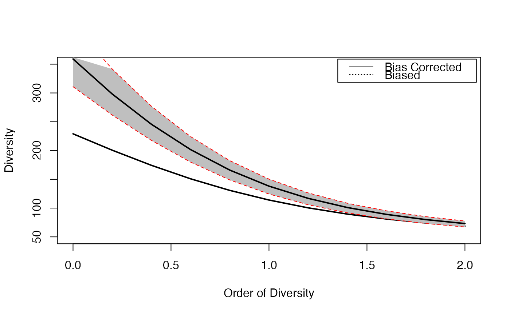

CommunityProfile.RdCalculates the diversity or entropy profile of a community, applying a community function to a vector of orders.
CommunityProfile(FUN, NorP, q.seq = seq(0, 2, 0.1),
NumberOfSimulations = 0, Alpha = 0.05, BootstrapMethod = "Chao2015",
size = 1, ..., ShowProgressBar = TRUE, CheckArguments = TRUE)
as.CommunityProfile(x, y, low = NULL, high = NULL, mid = NULL)
is.CommunityProfile(x)
# S3 method for CommunityProfile
plot(x, ..., main = NULL,
xlab = "Order of Diversity", ylab = "Diversity", ylim = NULL,
LineWidth = 2, ShadeColor = "grey75", BorderColor = "red")
# S3 method for CommunityProfile
autoplot(object, ..., main = NULL,
xlab = "Order of Diversity", ylab = "Diversity",
ShadeColor = "grey75", alpha = 0.3, BorderColor = "red",
col = ggplot2::GeomLine$default_aes$colour,
lty = ggplot2::GeomLine$default_aes$linetype,
lwd = ggplot2::GeomLine$default_aes$size)
CEnvelope(Profile, LineWidth = 2, ShadeColor = "grey75", BorderColor = "red", ...)The function to be applied to each value of \(q.seq\). Any function accepting a numeric vector (or a two-column matrix) and a number as first two arguments and an argument named CheckArguments is acceptable (other arguments of the functions are passed by ...). See *Details* for useful entropy and diversity functions and *Examples* for an ad-hoc one.
A numeric vector. Contains either abundances or probabilities.
A numeric vector: the sequence of diversity orders to address. Default is from 0 to 2.
The number of simulations to run, 0 by default.
The risk level, 5% by default.
The method used to obtain the probabilities to generate bootstrapped communities from observed abundances. See rCommunity.
The size of simulated communities used to compute the bootstrap confidence envelope. 1 (default) means that the actual size must be used.
An object.
An object to be tested or plotted or the vector of orders of community profiles in as.CommunityProfile.
Entropy or diversity values of each order, corresponding to x values.
Entropy or diversity lower bound of the confidence envelope, corresponding to x values.
Entropy or diversity higher bound of the confidence envelope, corresponding to x values.
Entropy or diversity center value (usually the mean) of the confidence envelope, corresponding to x values.
An CommunityProfile to be plotted.
Additional arguments to be passed to FUN in CommunityProfile, to plot in plot.CommunityProfile or to lines in CEnvelope.
The main title of the plot.
The x axis label of the plots.
The y axis label of the plot.
The interval of y values plotted.
The width of the line that represents the actual profile.
The color of the shaded confidence envelope.
The color of the bounds of the confidence envelope.
Opacity of the confidence enveloppe, between 0 and 1.
The color of the geom objects. See "Color Specification" in par.
The type of the lines. See lines.
The width of the lines. See lines.
If TRUE (default), a progress bar is shown.
Logical; if TRUE, the function arguments are verified. Should be set to FALSE to save time when the arguments have been checked elsewhere.
The function CommunityProfile is used to calculate diversity or entropy profiles based on community functions such as Tsallis or ChaoPD.
The first two arguments of the function must be a probability or abundance vector and a number (\(q\)).
Additional arguments cannot be checked.
Unexpected results may be returned if FUN is not used properly.
If NumberOfSimulations is greater than 0, a bootstrap confidence interval is produced by simulating communities with rCommunity and calculating their profiles.
The size of those communities may be that of the actual community or specified by size.
Simulating communities implies a downward bias in the estimation: rare species of the actual community may have abundance zero in simulated communities.
Simulated diversity values are recentered if `size = 1` so that their mean is that of the actual community.
Else, it is assumed that the bias is of interest and must not be corrected.
CommunityProfile objects can be plotted.
They can also be added to the current plot by CEnvelope.
A CommunityProfile, which is a list:
The order \(q\) values
The entropy or diversity values returned by FUN
The lower bound of the confidence interval
The upper bound of the confidence interval
# Load Paracou data (number of trees per species in two 1-ha plot of a tropical forest)
data(Paracou618)
# Plot diversity estimated without bias correction
plot(CommunityProfile(Diversity, Paracou618.MC$Ps, seq(0, 2, 0.2)),
lty=3, ylim=c(50, 350))
# Estimate diversity, with a condidence envelope
# (only 10 simulations to save time, should be 1000)
Profile <- CommunityProfile(Diversity, as.AbdVector(Paracou618.MC$Ns),
seq(0, 2, 0.2), Correction="UnveilJ", NumberOfSimulations=10)
#>
# Complete the plot, and add the legend
CEnvelope(Profile, main="Paracou Plots Diversity")
legend("topright", c("Bias Corrected", "Biased"), lty=c(1,3), inset=0.01)

# Advanced use with beta-diversity functions :
# Profile of the beta entropy of the first community of Paracou618.
# Observed and expected probabilities are bound into a 2-column matrix
# An intermediate function is necessary to separate them before calling TsallisBeta
# The CheckArguments is mandatory but does not need to be set: CommunityProfile() sets it to FALSE
CommunityProfile(function(PandPexp, q, CheckArguments)
{TsallisBeta(PandPexp[, 1], PandPexp[, 2], q)},
NorP=cbind(Paracou618.MC$Psi[, 1], Paracou618.MC$Ps), q.seq=seq(0, 2, 0.2))
#> $x
#> [1] 0.0 0.2 0.4 0.6 0.8 1.0 1.2 1.4 1.6 1.8 2.0
#>
#> $y
#> [1] 53.42961065 16.60496236 5.55701448 2.02871915 0.80974134 0.34993577
#> [7] 0.16100624 0.07750741 0.03849038 0.01952232 0.01004705
#>
#> attr(,"class")
#> [1] "CommunityProfile"